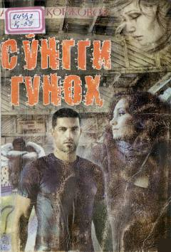

SGSirli o'lim va gunohlar girdobiga tortilgan qiz taqdiri haqida mistik qissa.
Bu kitobga Azamat Qorjovovning 'So'nggi gunoh' va 'Uch ayol fitnasi' mistik qissalari kiritilgan. 'So'nggi gunoh'da olisdagi qishloqdan kelgan abituriyent qiz Gulyuzning to'ydan bir kun oldin vafot etgan kuyovning sirli tarixi bilan to'qnashishi va gunohlar girdobiga sho'ng'ishi tasvirlangan. 'Uch ayol fitnasi'da esa bir qishloqda o'sgan uch dugonaning yillar o'tib fosh bo'lgan fitna-hiylalari bayon etiladi.